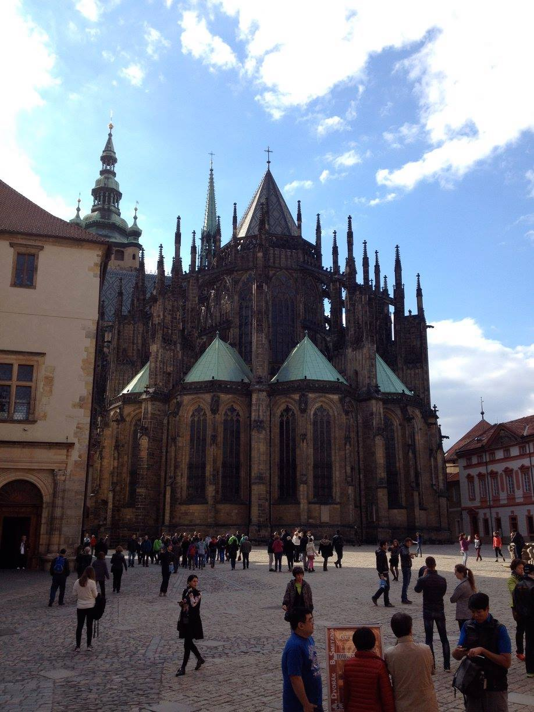

Last summer I traveled to Berlin, Prague, and Budapest. I spent most of my time in hostels and meeting up with other travelers, but I spent two weeks staying with friends I knew from the US who were living abroad. I stayed with one friend in Berlin and also with a friend in Budapest who was doing her Masters at CEU.

This cartoonish building seems like a piece of experimental architecture from the 20th century, but it is in fact a hydraulics research center!
This incredible example of Gothic Architecture sits imposingly atop a hill within the Prague Castle complex, and is over a thousand years old

In person, the Parliament building of Budapest is an incredibly impressive sight. It sits on the bank of the Danube river, across from the old Castle. Tragically, it was the site of a bloody massacre in 1956 at an anti-communist demonstration.
| City | Favorite Things | Least Favorite Things |
|---|---|---|
| Berlin | Doner Kebab; Wild Nightclubs; Excellent Museums | Expensive Public Transit; Right Turns at Stoplights are Illegal |
| Prague | Abundant Music; Unique Architecture | Terrible Street Signage |
| Budapest | Impressive Architecture; Ruin Pubs | Scammers |